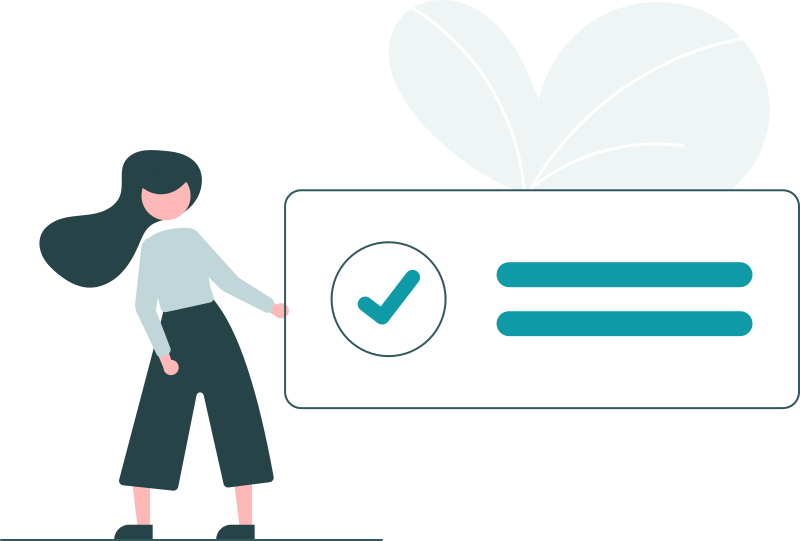

00:00 – 00:30Rapid Crisis Triage
Before any technique, one question: what is actually happening in front of you? The first half hour is about reading acute distress accurately and fast, inside the Psychological First Aid framework.
- Telling panic, dissociation and acute distress apart while they are happening
- Psychological First Aid as a working sequence, not a definition to recite
- Risk and safety questions you can ask without escalating the room
- The moment a session stops being therapy and becomes stabilisation